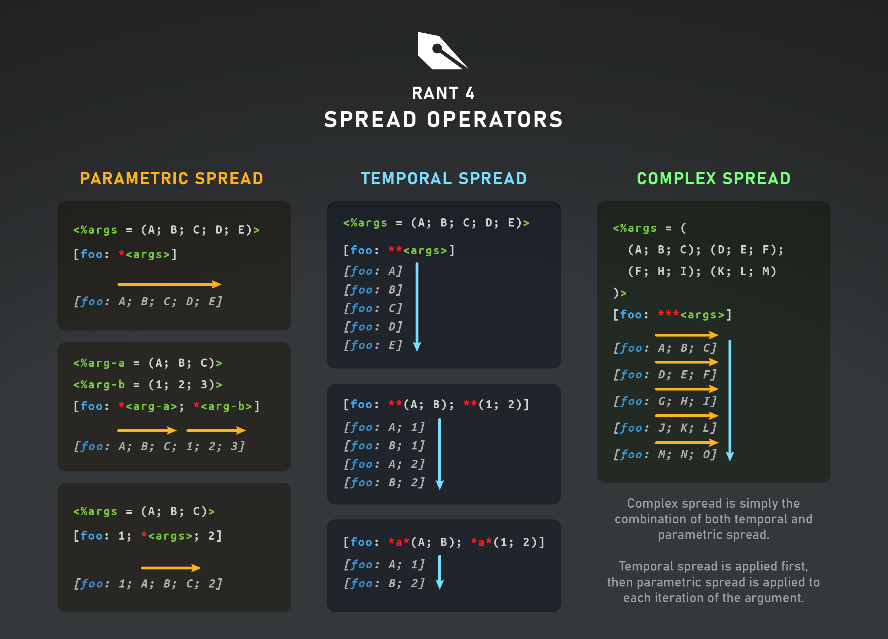

Argument spreading
Argument spreading generally refers to deconstructing a collection and dynamically passing its elements as separate arguments into a function call. Ranty expands on this concept by allowing you to spread arguments across not just one, but two different axes.
In total, Ranty supports three different spread operations: parametric, temporal, and complex.

Parametric spread
The parametric spread operator lets you use a list to pass multiple arguments at once to a single function call. This operation is referred to in Ranty as "parametric spreading" or simply "spreading."
Spreading is mostly useful for cases where the contents of a list need to be passed to a variadic parameter, but it will work on any other parameter (required, optional, or variadic).
There are no restrictions on the position of a spread within an argument list; you can add them to the start, end, middle, or even have multiple spreads sprinkled throughout. As long as the final argument list meets the requirements of the target function, it "just works."
Argument spreading is performed by prefixing an argument with *, as seen below:
<$extras = (baz; qux)>
[cat: foo; bar; * <extras>; boo]
# Expands to: [cat: foo; bar; baz; qux; boo]
Attempting to spread a non-list will simply pass the value as a normal argument.
Temporal spread
Ranty has a second spread operatior, the temporal spread operator (**), which behaves differently from a parametric spread.
Instead of spreading across parameters, it spreads across time itself: the target function is called once for each value in the temporally spread list argument (known as a "temporal argument"), passing in the current list item as the argument value. This essentially turns the function call into a loop.
This is best explained with the following example:
# Simple function that prints tab-separated values with a newline at the end
[%println: cols*] {
[join: <cols>; \t]\n
}
<%items = (foo; bar; baz)>
NORMAL SPREAD:\n
[println: * <items>]\n
# Expands to: [println: foo; bar; baz]
TEMPORAL SPREAD:\n
[println: ** <items>]\n
# Expands to:
# -> [println: foo]
# -> [println: bar]
# -> [println: baz]
This produces the following output:
NORMAL SPREAD:
foo bar baz
TEMPORAL SPREAD:
foo
bar
baz
As with parametric spreading, using a temporal spread on a non-list argument simply passes it as a regular argument.
Multiple temporal arguments
A function call can have more than one temporal argument. When this happens, Ranty will call the function once for each possible combination of values from all temporal arguments.
When iterating through the combinations, Ranty will increment the selection for the leftmost temporal argument first. When it rolls back over to the first item, the selection of the second temporal argument is incremented, then the third, and so on. The total number of iterations will be equal to the product of the lengths of all temporal arguments.
The following example demonstrates how this works:
# Print out every combination (disgusting or not) of two lists of seasonings
[cat: ** (salt; pepper; sugar); \t; ** (cinnamon; cilantro; basil; cloves); \n]
This produces the following output:
salt cinnamon
pepper cinnamon
sugar cinnamon
salt cilantro
pepper cilantro
sugar cilantro
salt basil
pepper basil
sugar basil
salt cloves
pepper cloves
sugar cloves
Temporal argument synchronization
In some cases it may be desirable to perform an operation only on elements with matching indices from two or more lists (often called a "zip" operation). Thankfully, this is easy to do with temporal arguments by adding a label to the temporal spread operators you want to synchronize.
To add a label to a temporal spread operator, simply add any sequence of alphanumeric characters, understores, and hyphens between the two * characters, like this:
[cat: *a* (1; 2; 3); *a* (A; B; C); \n]
# Expands to:
# -> [cat: 1; A; \n]
# -> [cat: 2; B; \n]
# -> [cat: 3; C; \n]
Doing this produces only 3 iterations:
1A
2B
3C
Complex spread
Temporal and parametric spread can be combined so that each iteration of a temporal argument is also parametrically spread. This is called a complex spread.
To do this, just add * after the ** or *a* in your temporal argument:
[irange: *** ((1; 10); (100; 110); (200; 210)) |> list]
# Expands to:
# -> [irange: 1; 10 |> list]
# -> [irange: 100; 110 |> list]
# -> [irange: 200; 210 |> list]
# Evaluates to:
# -> (: [range(1 + x < 11)]; [range(100 + x < 111)]; [range(200 + x < 211)])